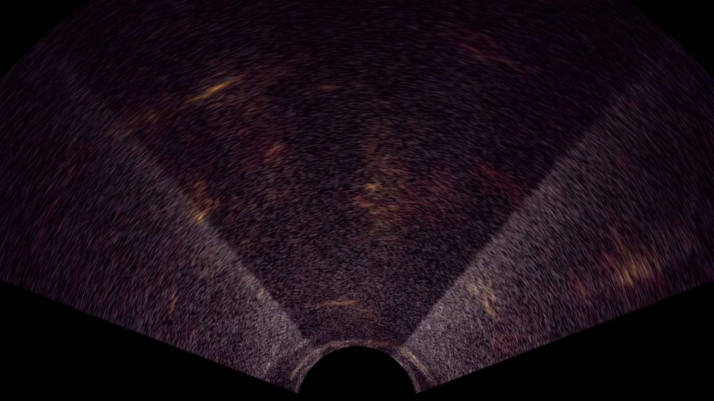
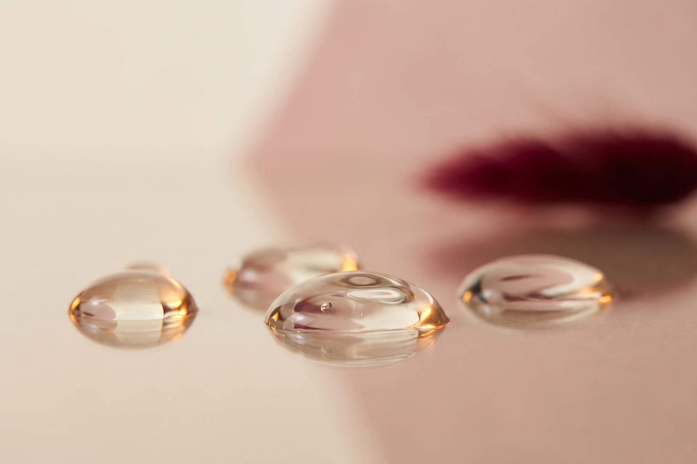
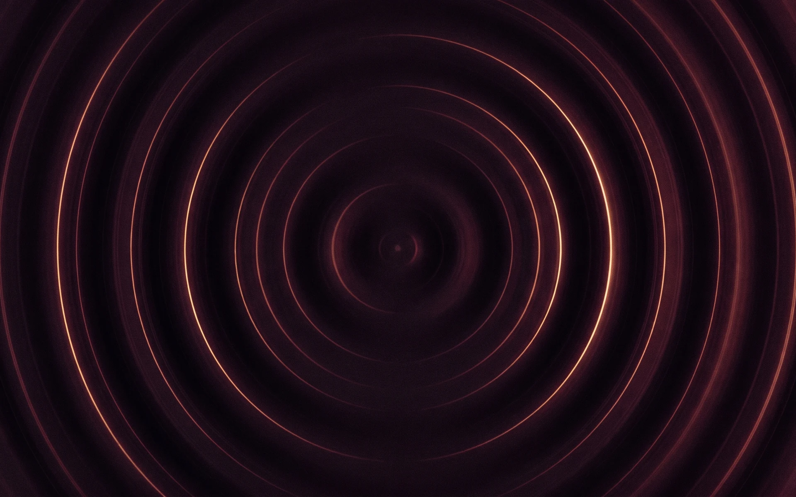
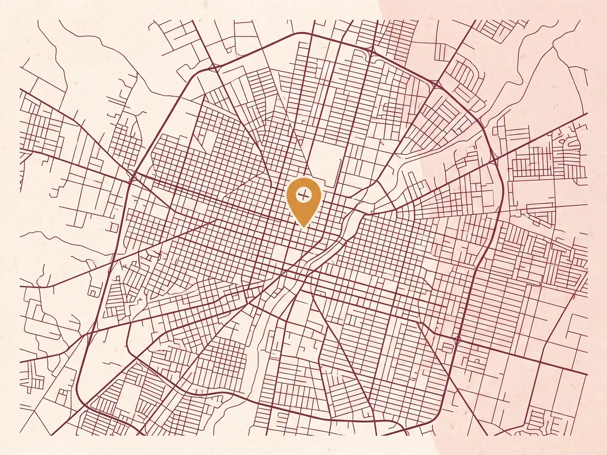

Guadalajara, Jalisco
Ultrasonido diagnóstico hecho y leído por el mismo radiólogo.
El Dr. Carlos Hernández realiza personalmente el barrido y firma la interpretación de tu estudio. 29 estudios disponibles, desde $800 MXN, en su consultorio en Guadalajara.
- Estudios disponibles
- 29 tipos de ultrasonido
- Rango de precios
- $800 a $1,500 MXN
- Duración del estudio
- 15 a 40 minutos
- Quién lo interpreta
- Médico radiólogo, en persona
Estudios y precios
Precios en pesos mexicanos, vigentes a septiembre de 2026. Toca cualquier estudio para agendarlo con la preparación que le corresponde.
Mostrando los 29 estudios
No hay estudios que coincidan con esa búsqueda. Escríbenos por WhatsApp y te decimos si lo realizamos.
¿No ves el estudio que te indicaron? Mándanos la orden médica por WhatsApp al 33 1318 2911 y te confirmamos disponibilidad y precio.

Cómo es tu visita
Cuatro pasos, entre 30 y 60 minutos de principio a fin.
-
1
Agendas y confirmas preparación
Eliges tu estudio en esta página y envías la solicitud por WhatsApp. Te respondemos con el horario confirmado y la preparación exacta que necesitas —ayuno, vejiga llena o ninguna.
-
2
Llegas al consultorio
Llega 10 minutos antes. Si traes orden médica o estudios previos, tráelos: comparar con un estudio anterior cambia la lectura de muchos hallazgos.
-
3
El radiólogo hace el estudio
El Dr. Hernández realiza el barrido él mismo. Puede ampliar el estudio en el momento si encuentra algo que amerite verse con más detalle, y resuelve tus dudas durante la exploración.
-
4
Recibes tu reporte
Te entregamos el reporte firmado con las imágenes del estudio, listo para llevar a tu médico tratante.

Cómo prepararte
La preparación cambia según el estudio. Esta es la guía general; confirmamos la tuya por WhatsApp al agendar.
Abdomen superior, abdomen total, hígado y vías biliares, prueba de Boyden, apendicular, píloro y Doppler renal.
No comas nada durante las 6 a 8 horas previas. Puedes tomar agua simple y tus medicamentos habituales con un poco de agua. El ayuno evita que el gas intestinal y la vesícula contraída tapen la vista de los órganos.
Pélvico, obstétrico, vesicoprostático, renal vesical prostático y abdomen total.
Toma un litro de agua una hora antes de tu cita y no orines hasta terminar el estudio. La vejiga llena funciona como ventana acústica: deja ver útero, ovarios o próstata con nitidez.
Al contrario de los anteriores, el transvaginal se realiza con la vejiga vacía. Orina justo antes de pasar. No requiere ayuno.
Requiere el recto libre de heces. Lo habitual es aplicar un enema evacuante la noche anterior o la mañana del estudio. Confírmanos tu caso al agendar porque la indicación puede variar.
Es un estudio en dos tiempos. Se explora la vesícula en ayuno, se te da un alimento graso y se repite la exploración para ver cómo se contrae. Aparta alrededor de 45 minutos a una hora.
Mamario, tiroides, inguinal, pared abdominal, hombro, rodilla, tobillo, codo, cadera y todos los Doppler excepto el renal.
Para el estudio mamario, ven sin talco, crema ni desodorante en la zona. Para articulaciones, usa ropa cómoda que permita descubrir fácilmente la zona a explorar.
Esta información es orientativa y no sustituye la indicación de tu médico tratante. Si tienes dudas sobre tu caso, escríbenos antes de tu cita.
 Médico radiólogo
Médico radiólogo
Quién te atiende
En la mayoría de los laboratorios de imagen, un técnico toma las imágenes y un radiólogo las lee horas o días después, sin haber visto al paciente. Aquí no.
El Dr. Carlos Hernández es médico radiólogo y atiende su propio consultorio de ultrasonido en Guadalajara. Él realiza el barrido, decide en el momento qué necesita verse con más detalle y firma la interpretación. Esa continuidad entre quien explora y quien interpreta es lo que reduce los estudios incompletos y las repeticiones.
- Especialidad
- Radiología e imagen diagnóstica
- Cédula profesional
- PENDIENTE_CEDULA
- Enfoque
- Ultrasonido diagnóstico y Doppler
- Atiende en
- Guadalajara y Zona Metropolitana

Agenda tu cita
Llena estos datos y se abrirá WhatsApp con tu solicitud ya escrita. Te confirmamos horario y preparación en cuanto la recibamos.
Preguntas frecuentes
En este consultorio, entre $800 y $1,500 pesos. Los estudios de $800 incluyen pélvico, mamario, transvaginal, renal, hígado y vías biliares, apendicular, píloro, pared abdominal, inguinal, vesicoprostático y transrectal. El abdomen superior y la prueba de Boyden cuestan $900; el obstétrico, tiroides, hombro y renal-vesical-prostático $1,000; el abdomen total y las articulaciones (rodilla, tobillo, codo, cadera) $1,200; y todos los Doppler $1,500. Precios vigentes a septiembre de 2026.
No es indispensable para agendar. Si la tienes, llévala: saber qué sospecha tu médico orienta el barrido y hace más útil el reporte.
Un ultrasonido convencional toma de 15 a 25 minutos. Los Doppler vasculares toman de 25 a 40 minutos porque hay que medir el flujo en varios segmentos del vaso. La prueba de Boyden es la más larga: alrededor de una hora, porque se explora en dos tiempos.
El reporte lo elabora el mismo radiólogo que te exploró, así que se entrega el mismo día de tu estudio junto con las imágenes.
No duele y no usa radiación: trabaja con ondas sonoras de alta frecuencia. Por eso es el estudio de imagen de elección durante el embarazo. Se aplica gel tibio sobre la piel y se desliza el transductor. Los estudios endocavitarios (transvaginal y transrectal) pueden ser incómodos, pero no dolorosos.
El ultrasonido convencional muestra la estructura de los tejidos. El Doppler, además, mide la velocidad y la dirección con la que circula la sangre dentro de arterias y venas. Se usa para detectar trombosis, insuficiencia venosa, estrechamiento de las carótidas, varicocele o alteraciones del flujo renal.
Sí. Se realizan estudios obstétricos para control del embarazo, ultrasonido de cadera para displasia en lactantes y estudio pilórico en bebés. Un menor debe venir siempre acompañado por su madre, padre o tutor.
El consultorio está en Guadalajara y atiende pacientes de toda la Zona Metropolitana: Zapopan, San Pedro Tlaquepaque, Tonalá y Tlajomulco de Zúñiga.
Dónde estamos
Consultorio
PENDIENTE_CALLE_Y_NUMEROCol. PENDIENTE_COLONIA
Guadalajara, Jalisco, México
C.P. PENDIENTE_CP
Horarios
- Lunes a viernes
- 9:00 a 19:00
- Sábado
- 9:00 a 14:00
- Domingo
- Cerrado
Contacto
WhatsApp 33 1318 2911
Teléfono 33 1318 2911
